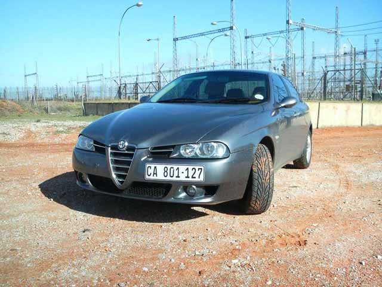
Ian Robinson - South Africa
I'm from South Africa and have a 2.0 T-Spark Lusso, 2006 model.
I know this may sound a bit strange, but we did still get the T-Spark engine in South Africa right up till 2006,
with the JTS engine making it's debut in the 159.
Here is my car, absolutely stock in every respect. Inside it had tan leather Momo seats, and the full Lusso specification.
Before this car, I had a Fiat Punto HGT which was a monster!
Really fast, excellent road holding and unbeleivable stability.
So my 2.0 T-Spark is a bit of a performance let-down, but I'm learning to love it a little bit more every day.
Here are a few pictures of the car, taken in a very rural part of South Africa,
and in the background on one picture you will see the longest train in the world,
the Sishen iron Ore train, crossing an equally impressive (due to it's setting) bridge.
I love the 156's lines, curves and angles which makes it an extremely photogenic car. It looks good from all angles...
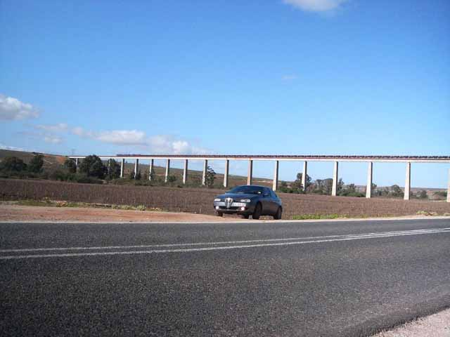
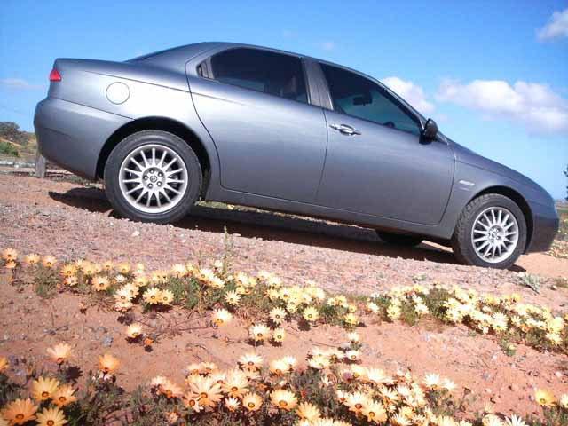
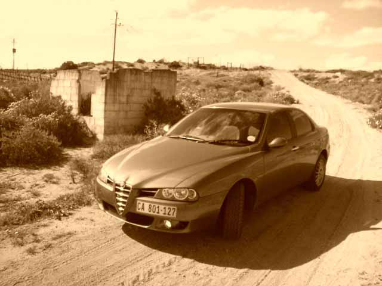
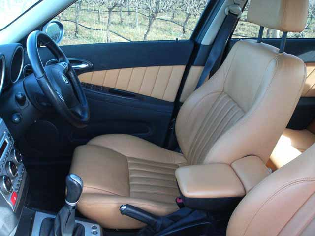
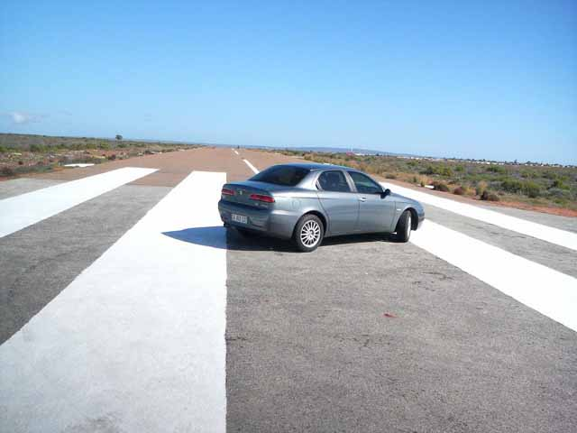
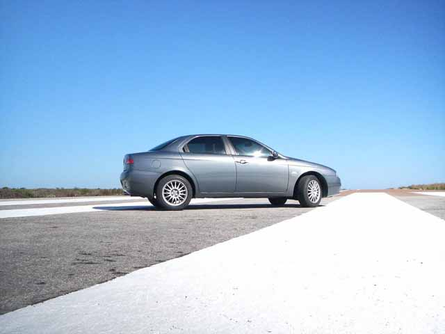
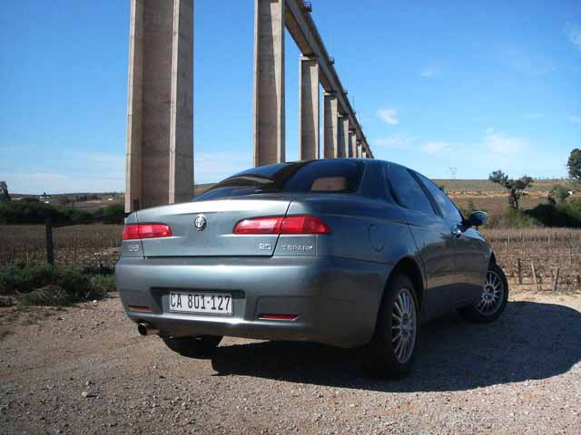
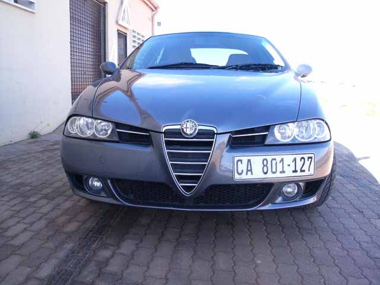
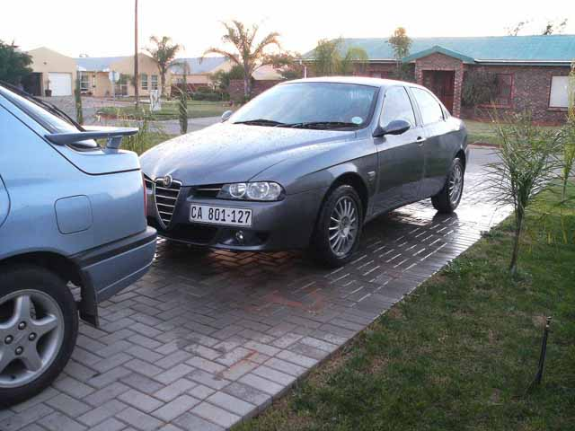
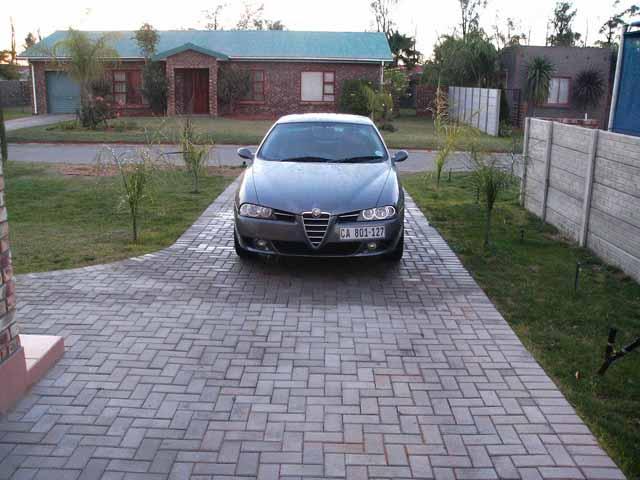
Submitted: 2007
![[Prev]](bw_prev.gif)
![[Index]](bw_index.gif)
![[Next]](bw_next.gif)